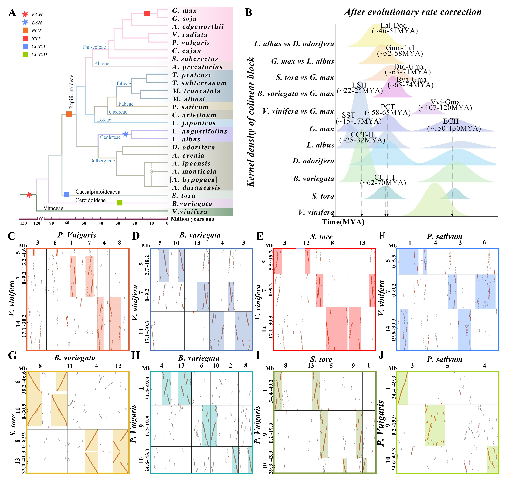
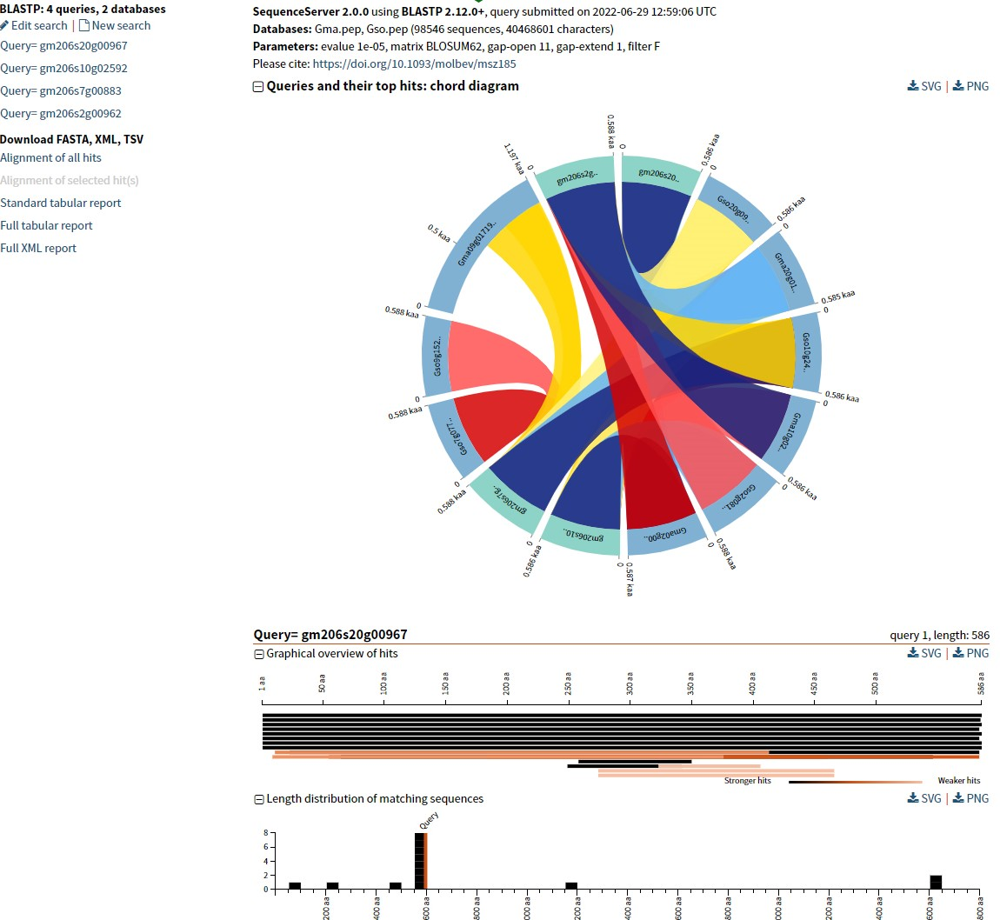
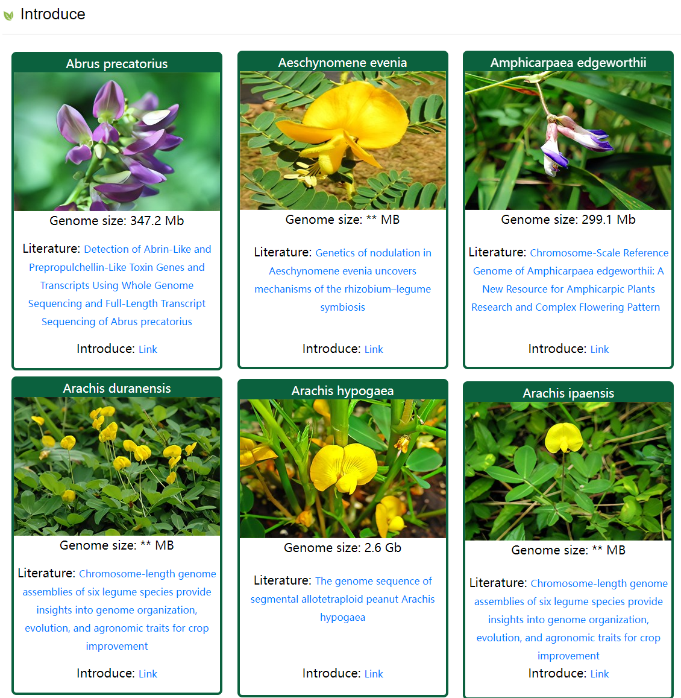
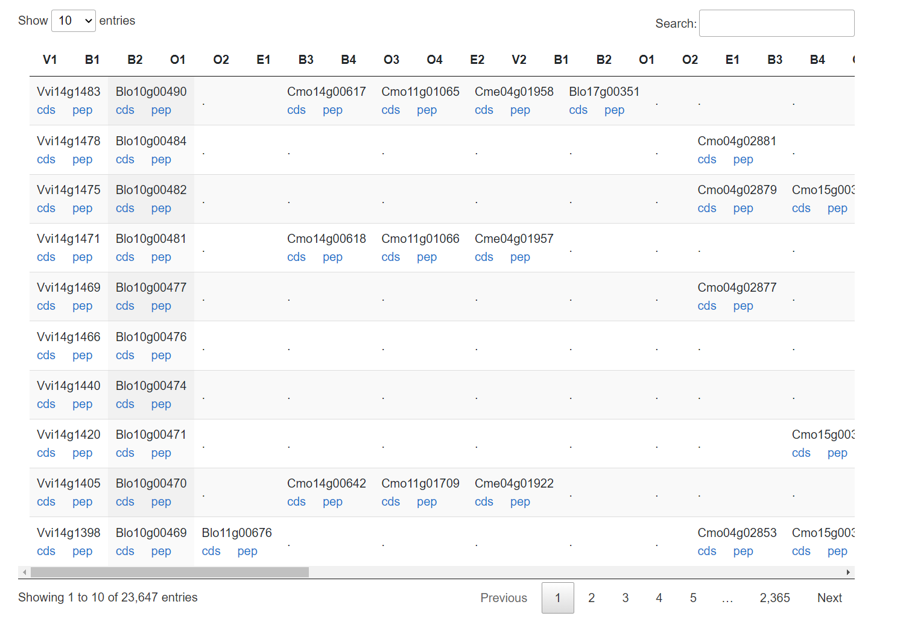
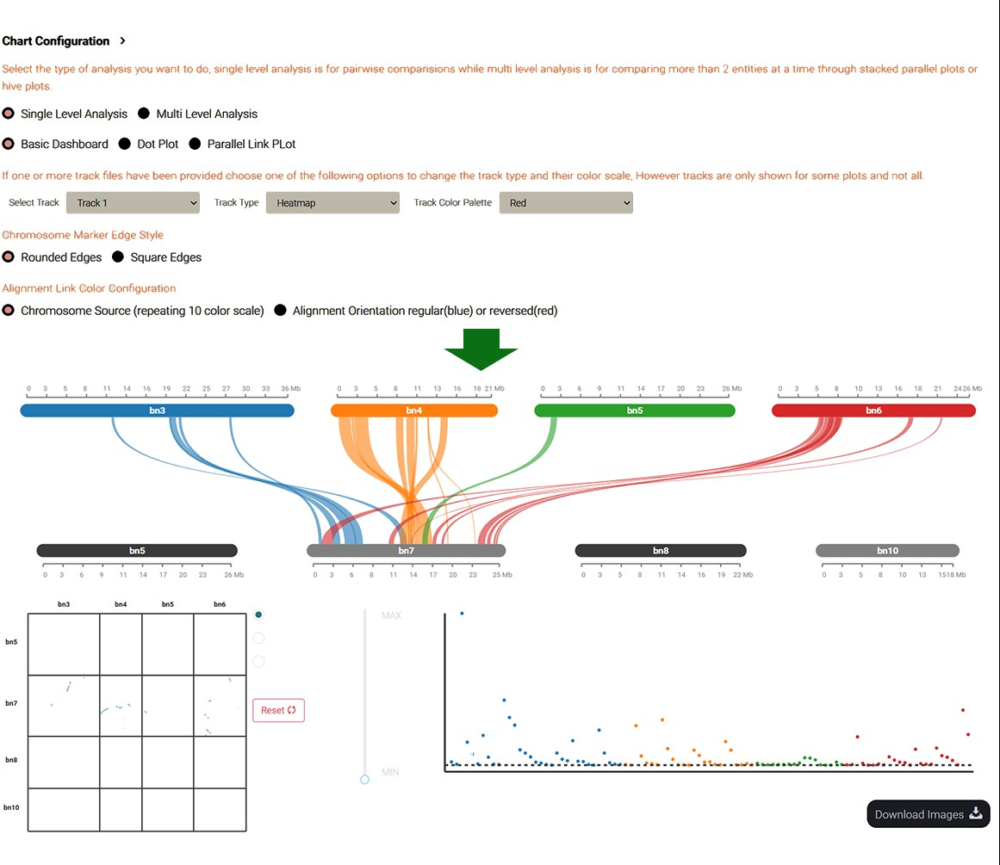
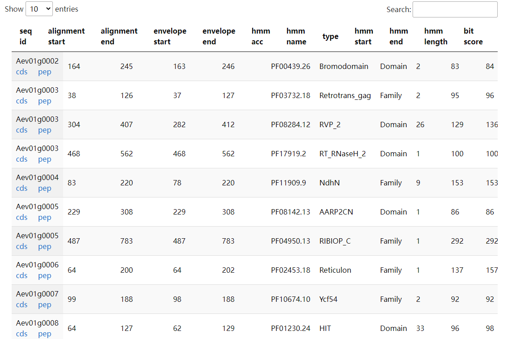

Overview
Welcome to LGRPv2
We've launched the Legume Genomics Research Platform version 2 (LGRPv2), now with 112 genomes including 62 legumes and Tamarindus indica. It offers browsing tools, annotations for 18,050,760 protein-coding genes, synteny analyses, and identification of paralogs, orthologs, and trait genes. New tools like DotView, SynView, DecoBrowse, and AncVisual enhance exploration. Integrated resources include a species encyclopedia, omics data, and a comparative genomics toolbox with 57 tools (29 new). Our aim with LGRPv2 is to be a comprehensive resource for legume genomics. Additionally, it offers intuitive query, analysis, and visualization tools, along with statistical charts, user manuals, communities, and submission portals, ensuring usability for all users, making it a vital asset for legume genomics research.


Quick links
Dotplot

Blast visualization

Species data

Collinear list

Syntenic gene pairs

Gene families

Citation
If you use LGRPv2 in your scientific research, please cite us:
・ #############
・ #############